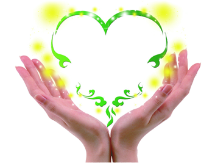

人
人字易写，人难做。一路跌跌撞撞，从一个孩子，慢慢成长为一个顶天立地的人。
就算风雨满路，依旧坦然向前；就算霜雪满地，依旧傲然挺立。
人生如奔跑的河流，一直向前，直到到达大海的尽头，人生也走到了最后。
人生有限，如何做好人，这是一个很值得思考的问题。
人·做事·水
人生在世，要像河里的水一样，找到自己的人生目标，并为之努力奋斗。哪怕是付出一辈子的时间来追求，也要找到属于自己的那片大海。
在追求目标的道路上，往往会遇到各种各样的事。我们应该保持满满的能量，不断往自己的人生长河里面注入清泉，让人生长河涌流不止。
人生警言
老子说：“上善若水。水善利万物而不争，处众人之所恶，故几于道。居善地，心善渊，与善仁，言善信，正善治，事善能，动善时。夫唯不争，故无尤。”
做人应该像水一样，要有极大的可塑性。因为水性柔而能变形。
在海洋中是海洋之形，在江河中是江河之形，在杯盘中是杯盘之形，在瓶罐中是瓶罐之形。做人应该像水一样，至柔之中又有至刚、至净、能容、能大的胸襟和气度。
